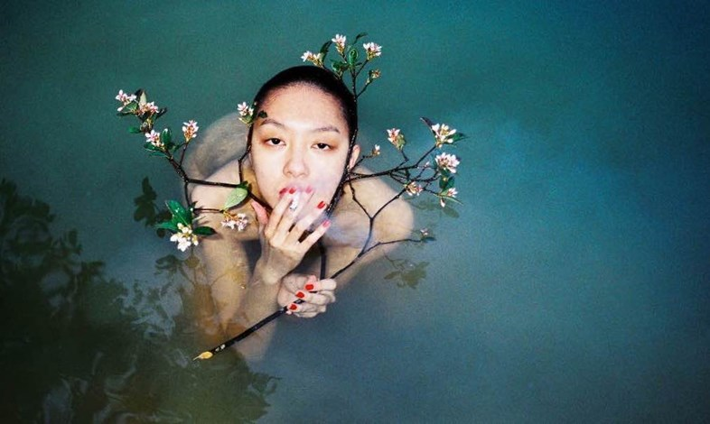

中国摄影师任航死于29岁。
这则新闻因为艺术家的朋友们在社交网络上对他的悼词而被公众知晓。他们说任航今天早晨死于柏林。
“我的朋友任航今天早晨在柏林离开了我们，”出版人Pierre Bessard写到“我很难过也很惊讶。”
比利时的Stieglitz19画廊管理者Dries Roelens也证实了这则新闻。当时任航的摄影作品正在他的画廊展出。“任航是一个诗人，摄影师，魔术师……”他在Facebook上写到。“你是最棒的，最神奇的。”
比利时的Stieglitz19画廊管理者Dries Roelens也证实了这则新闻。当时任航的摄影作品正在他的画廊展出。“任航是一个诗人，摄影师，魔术师……”他在Facebook上写到。“你是最棒的，最神奇的。”
德国出版物De Morgen声称摄影师是自杀的，这个消息得到了现场证实。
我们已经联系了任航的代表人，一旦有了新的消息我们会及时更新。
